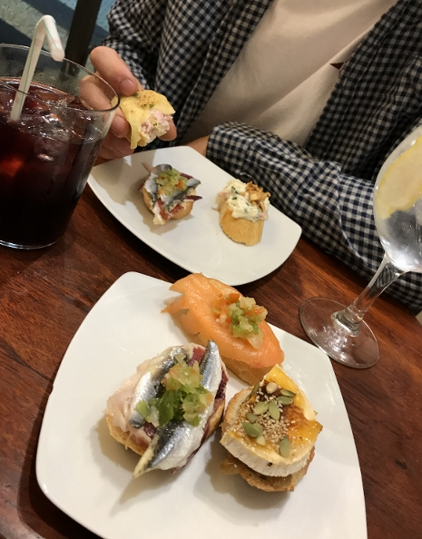

Travel: San-Sebastian
15 / 05 / 2018
During the last week of September 2017 me and my boyfriend packed our bags and left for a foodie holiday to the beautiful seaside city of San Sebastian, Spain.
For a while we had been thinking about where we wanted to take our holiday, when we were recommended this Spanish pearl by his auntie who'd recently visited. San Sebastian combines beach, shopping and fine dining. What's not to like?! It's the perfect destination in Europe for those wanting a relaxing holiday with a focus on quality food. Oh, and you can surf, too. I must say, it was very romantic as well - a perfect couples holiday.
.JPG)
Even though it was late September, the temperatures were in the mid-twenties (very important for a pale Norwegian). We spent our days reading books on the beach, exploring the area, doing some shopping and of course, eating lots of great food.
The food here was just incredible! The city is known for its many small tapas bars, called pinxtos, where you move from bar to bar having a few dishes & drinks at each place. If you feel like you've had enough tapas there are plenty of other restaurants to choose from, including an array of Michelin-starred restaurants. It really is a foodies paradise.
Monkfish served with potatoes and garlic butter. We both agreed this was our best meal here, which just proves that sometimes simple ingredients are the best.
If you haven't already decided where to go on holiday this summer, why not come here? I miss lying on the beach reading my book and drinking sangria, before having dinner somewhere ...
Ingrid x